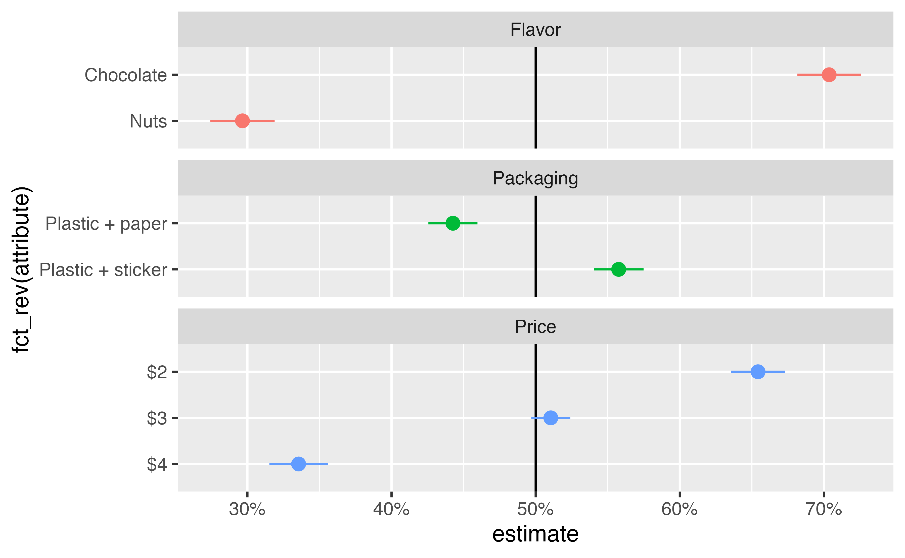
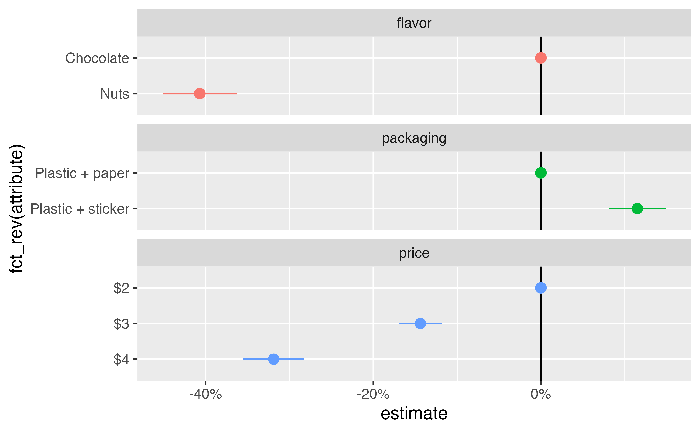

library(tidyverse)
library(marginaleffects)
library(parameters)
library(tinytable)
library(scales)
library(ggforce)
stickers <- readRDS("data/processed_data/study_5_sticker.rds")7 MMs and AMCEs with OLS
7.1 Model
When estimating causal effects, the main estimand of interest is an average treatment effect, or \(E(Y \mid X)\). In political science and economics, analysts typically rely on an ordinary least squares (OLS) estimator, or a linear probability model (LPM), where the \(\beta\) term in a linear regression model (or a partial derivative or marginal effect, if interaction terms are involved) represents the average effect of the treatment on the outcome. For those trained in predictive modeling or for Bayesians who seek out distributional families that reflect the underlying data generating process of the outcome variable, using LPMs on a binary (or multinomial) outcome can feel wrong. However, @Gomila:2021 demonstrates that in experiments with binary outcomes, LPMs are typically more consistent and unbiased than logistic regression estimators.
This means that analyzing conjoint data can be as simple as a basic linear model with lm().
model_ols <- lm(
choice ~ price + packaging + flavor,
data = stickers
)
model_parameters(model_ols, verbose = FALSE)Parameter | Coefficient | SE | 95% CI | t(7075) | p
--------------------------------------------------------------------------------------
(Intercept) | 0.80 | 0.01 | [ 0.78, 0.82] | 69.39 | < .001
price [$3] | -0.14 | 0.01 | [-0.17, -0.12] | -11.38 | < .001
price [$4] | -0.32 | 0.01 | [-0.34, -0.29] | -25.23 | < .001
packaging [Plastic + sticker] | 0.11 | 0.01 | [ 0.09, 0.14] | 11.15 | < .001
flavor [Nuts] | -0.41 | 0.01 | [-0.43, -0.39] | -39.46 | < .001While it is tempting (and possible) to determine the marginal means and causal effects from these raw regression coefficients—i.e., the intercept represents the average probability of selecting a $2 granola bar when all other characteristics are set to their reference values—it is more advisable to use the post-estimation functions from the {marginaleffects} package to calculate average predictions and comparisons. {marginaleffects} can provide probability-scale averages and contrasts, can calculate marginal means and effects across a balanced grid of attributed levels, and can adjust the estimated standard errors to account for repeated respondents.
7.2 Marginal means
Marginal means represent the probability-scale fitted values from the model, calculated across a balanced reference grid of all possible combinations of feature levels. These predictions are then marginalized or averaged across features of interest.
In the case of the sticker experiment, there are 12 possible combinations of price, packaging, and flavor:
feature_grid <- stickers |>
tidyr::expand(price, packaging, flavor)
tt(feature_grid)| price | packaging | flavor |
|---|---|---|
| $2 | Plastic + paper | Chocolate |
| $2 | Plastic + paper | Nuts |
| $2 | Plastic + sticker | Chocolate |
| $2 | Plastic + sticker | Nuts |
| $3 | Plastic + paper | Chocolate |
| $3 | Plastic + paper | Nuts |
| $3 | Plastic + sticker | Chocolate |
| $3 | Plastic + sticker | Nuts |
| $4 | Plastic + paper | Chocolate |
| $4 | Plastic + paper | Nuts |
| $4 | Plastic + sticker | Chocolate |
| $4 | Plastic + sticker | Nuts |
We can feed each row of this balanced grid into the model to generate 12 predicted values:
predictions(model_ols, newdata = feature_grid)
Estimate Std. Error z Pr(>|z|) S 2.5 % 97.5 %
0.8003 0.0115 69.39 <0.001 Inf 0.7777 0.8229
0.3933 0.0115 34.10 <0.001 844.2 0.3707 0.4159
0.9153 0.0115 79.39 <0.001 Inf 0.8927 0.9379
0.5082 0.0115 44.07 <0.001 Inf 0.4856 0.5308
0.6565 0.0115 56.91 <0.001 Inf 0.6339 0.6791
0.2495 0.0115 21.63 <0.001 342.4 0.2269 0.2721
0.7715 0.0115 66.88 <0.001 Inf 0.7489 0.7941
0.3645 0.0115 31.59 <0.001 725.3 0.3419 0.3871
0.4815 0.0115 41.73 <0.001 Inf 0.4589 0.5042
0.0745 0.0115 6.46 <0.001 33.2 0.0519 0.0971
0.5965 0.0115 51.71 <0.001 Inf 0.5739 0.6191
0.1895 0.0115 16.43 <0.001 199.2 0.1669 0.2121
Type: responseFinally, we can marginalize or average these predicted values across features of interest. For instance, to find the marginal means for the two packaging conditions, we can calculate the group averages for the two types of packaging:
predictions(model_ols, newdata = feature_grid) |>
group_by(packaging) |>
summarize(avg = mean(estimate))# A tibble: 2 × 2
packaging avg
<fct> <dbl>
1 Plastic + paper 0.443
2 Plastic + sticker 0.558Manually creating a balanced reference grid and using group_by() and summarize() is useful for understanding the intuition behind finding estimated marginal means, but in practice it is better to use avg_predictions() from {marginaleffects}, which (1) creates the balanced grid automatically, (2) provides standard errors and other estimates of uncertainty, and (3) can adjust the standard errors to account for repeated respondents:
avg_predictions(
model_ols,
newdata = "balanced",
by = "packaging",
vcov = ~resp_id
)
packaging Estimate Std. Error z Pr(>|z|) S 2.5 % 97.5 %
Plastic + paper 0.443 0.00868 51.0 <0.001 Inf 0.426 0.460
Plastic + sticker 0.558 0.00881 63.3 <0.001 Inf 0.540 0.575
Type: responseWe can calculate the marginal means individually for each conjoint feature, then combine them all into one large data frame for plotting and table-making.
mm_ols <- c("price", "packaging", "flavor") |>
set_names(str_to_title) |>
map(\(x) {
avg_predictions(
model_ols,
newdata = "balanced",
by = x,
vcov = ~resp_id
) |>
rename(attribute = all_of(x))
}) |>
list_rbind(names_to = "feature")ggplot(
mm_ols,
aes(x = estimate, y = fct_rev(attribute), color = feature)
) +
geom_vline(xintercept = 0.5) +
geom_pointrange(aes(xmin = conf.low, xmax = conf.high)) +
scale_x_continuous(labels = label_percent()) +
guides(color = "none") +
facet_col(vars(feature), scales = "free_y", space = "free")
7.3 Average marginal component effects (AMCEs)
amce_ols <- avg_comparisons(
model_ols,
newdata = "balanced",
vcov = ~resp_id
)
amce_ols
Term Contrast Estimate Std. Error z Pr(>|z|) S 2.5 % 97.5 %
flavor Nuts - Chocolate -0.407 0.0226 -18.04 <0.001 239.2 -0.4513 -0.363
packaging Plastic + sticker - Plastic + paper 0.115 0.0174 6.61 <0.001 34.6 0.0809 0.149
price $3 - $2 -0.144 0.0131 -10.99 <0.001 90.9 -0.1694 -0.118
price $4 - $2 -0.319 0.0187 -17.09 <0.001 215.1 -0.3553 -0.282
Type: responseamces_split <- amce_ols |>
separate_wider_delim(
contrast,
delim = " - ",
names = c("attribute", "reference_level")
)
reference_categories <- amces_split |>
distinct(term, reference_level) |>
rename(attribute = reference_level) |>
mutate(estimate = 0, conf.low = 0, conf.high = 0)
amces_split |>
bind_rows(reference_categories) |>
ggplot(aes(x = estimate, y = fct_rev(attribute), color = term)) +
geom_vline(xintercept = 0) +
geom_pointrange(aes(xmin = conf.low, xmax = conf.high)) +
scale_x_continuous(labels = label_percent()) +
guides(color = "none") +
facet_col(vars(term), scales = "free_y", space = "free")
7.4 Average Feature Choice Probability (AFCP)
Maybe?